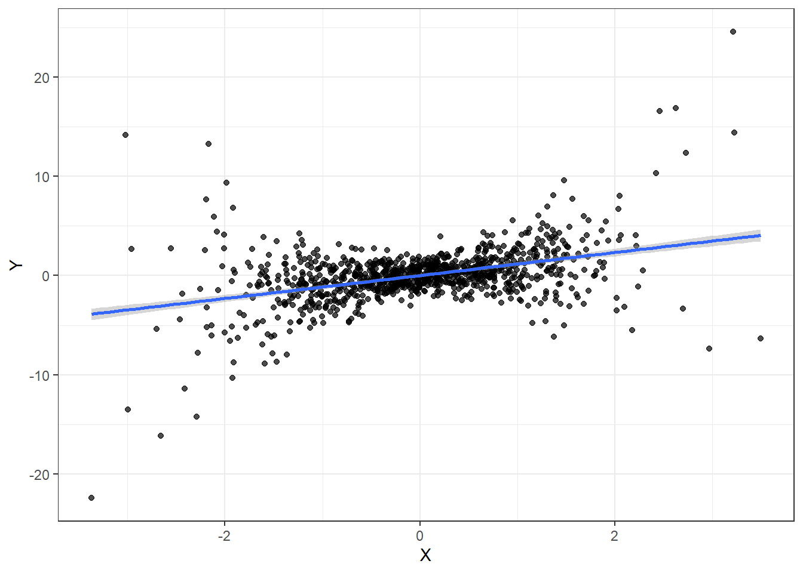

9 Linear regression - common misconceptions
While teaching this course, I have come across a few misconceptions held by students about linear regression. Admittedly, I think I held these beliefs at some point while I was an undergrad, While what follows is by no means an exhaustive list, I include these explanations because they clear up some common misunderstandings about linear regression.
9.1 Heteroskedasticity
Heteroskedasticity is certainly something to worry about if you want to get your standard errors right, and if your standard errors are not correct, your hypothesis tests, \(p\)-values, and confidence intervals will be wrong. Heteroskedasticity, however, does not affect the bias properties of the estimator. For our slope estimator \(\hat\beta_1\) to be unbiased, we just need that \(X\) is uncorrelated with the error term. Specifically that \(E[X_i\epsilon_i]=0\).
I think that this misconception comes up because we often teach heteroskedasticity through the lens of “the variance of \(\epsilon\) is a function of \(X\)”, and show our classes plots like this:
set.seed(42)
d<-tibble(X=rnorm(1000),eps=rnorm(1000)) %>% mutate(Y=X+(X^2+1)*eps)
(
ggplot(data=d,aes(x=X,y=Y))
+geom_point(alpha=0.7)+theme_bw()
+geom_smooth(method="lm",formula="y~x")
)
There is clearly a relationship between \(X\) and the error term, which we can see as the dots being more spread out vertically when \(X\) is far away from zero. However this plot is not a reason to suspect that \(\hat\beta_1\) is biased. If that were the case, then we would be able to predict the average \(\epsilon\) based on \(X\). All we know here is that there is more noise when \(X\) is far away from zero. Therefore, heteroskedasticity is something you need to worry about for computing standard errors, but it is not going to make or break anything to do with bias.
9.2 Multicolinearity
Multicolinearity is something that we will almost always have to deal with. As economists, it is unlikely, outside of experiments, for us to get data where everything is independent of everything else. What this means for linear regression is that your model might have a difficult time teasing apart the effect of two explanatory variables, because they are highly correlated with each other. For example, suppose that you were estimating the following equation using data from undergraduate students:
\[ \mathrm{Metrix}_i=\beta_0+\beta_1\mathrm{Micro}_i+\beta_2\mathrm{Macro}_i+\epsilon_i \]
Where Metrix, Micro, and Macro are a student’s grades in econometrics, microeconomics, and macroeconomics, respectively. It seems reasonable that Micro and Macro will be highly correlated. What this means is that you will not have many observations where one score is low and the other is high. It is this kind of variation that you would need to tease out the effect of each of these scores. Your standard errors will take account of this, and will be larger because of it.
But is this really a problem? Not unless your life dempends on the result of a hypothesis test. In this instance, your standard errors are just accurately reflecting the uncertainty you have in the individual effects.
What you most certainly shouldn’t do is leave one of these variables out of the equation. If they are correlated with each other, then the dropped variable will show up in the error term, and so you will then have a bias problem.
9.3 Omitted variables are always a problem
You want to estimate the effect of \(X\) on \(Y\), but you also have a variable \(Z\) in your dataset. You should probably include \(Z\) on the right-hand-side of your equation, right?
Probably, but we need to be careful. Here are some things to think about:
- If \(Z\) affects \(Y\), then \(Z\) will be in the error term of your regression. You can estimate the coefficient on \(X\) more precisely if you include \(Z\) in the regression.
- If \(Z\) affects \(Y\), and \(X\) abd \(Z\) are also correlated, then leaving out \(Z\) will mean thatr you will have an omitted variable correlated with \(X\). Your estimate of interest (the coefficient on \(X\)) will be biased, so you should include \(Z\) on the right-hand side.
- If there is no relationship between \(Z\) and the other variables, then its inclusion may increase the variance of your estimates, but will not change any of its bias properties.
- However, and this is the one you’ve got to worry about, suppose that \(X\) and \(Y\) affect \(Z\). Then you could introduce bias because \(Z\) is a collider. We will get to understanding these in more depth when we study Directed Acyclic Graphs, but for now you should be wary of estimating “kitchen sink” models that throw in all variables you have at your disposal into the model.
9.4 Normal errors
One does not need normal errors (\(\epsilon\)) to do inference using linear regression … if we are willing to assume that our sample size is large enough to justify the asymptotic approximation. There are some exact results for normal errors, but we rarely use them in economics because (1) errors are hardly ever normal, and (2) we are usually comforatble assuming that our sample sizes are large enough for the asymptotic approximation.